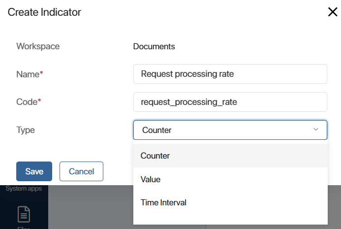

An indicator is a Low-code development tool designed to collect various data while business process instances are executed. You can use this tool to record the results of passing specific steps, changes in variable values, time interval between two actions, etc.
You can view the obtained data on a chart for further analysis. This will help you evaluate the efficiency of the process, identify problematic steps, find users who reduce the overall performance, and improve the current workflow.
For example, you can track how often the task of creating a contract is repeated after it is rejected in the Create a contract process. You can then show this data in a chart. This helps you compare employee performance and see which sales rep need to redo contracts more often than others do.
How to work with business process indicators
To measure the efficiency of a process using an indicator, do the following:
- Create an indicator in the workspace where the business process is configured. At the same time, define what information should be recorded in the process. To do this, select the indicator type and add custom context properties to record the results of the process execution.
- Save and publish the indicator to use it in the process. You can find the created indicators on the Indicators page in the workspace settings, as well as in Administration > Indicators.
- Go to the business process designer and add the indicator to the process before the step for which you want to record statistics. To do this, place the Set Indicator’s Value activity on the process diagram.
You can apply any indicator across multiple processes configured at different system levels.
начало примечание
Note
You cannot export an app, workspace, or module separately if a business process at its level uses an indicator created in another system component.
конец примечание
- To visualize the collected data, create a separate page and configure the Chart widget. You can add filters to the page for detailed data analysis.
Начало внимание
Only users included in the Administrators group can create and customize indicators.
Конец внимание
Create a process indicator
- To add an indicator:
- At the app or workspace level — click the gear icon next to the name and select Indicators.
- At the company level — go to Administration > Indicators.
- At the module level — on the module management page, go to the Performance Indicators tab.
- In the upper right corner of the page that opens, click + Indicator.
- Fill in the fields:

- Enter the name of the indicator.
- Enter the code that will be used when working with the Web API.
- Select the indicator type:
- Counter. Records the passing of a certain step on the process diagram. According to the configured process logic, you can count the increase or decrease of the counter. For example, in how many process instances the sales rep has completed the task of issuing a contract or how many process instances have not yet reached this stage.
- Value. Records a certain numeric value and also allows you to track the dynamics of values in the variable. For example, what was the preliminary amount of the contract and what amount is indicated in its final version.
- Time Interval. Records the time spent on the process step. For example, how many hours passed from the moment when a task was assigned to an employee until its completion. The time interval in the process is recorded using a script.
To learn more about how to use and customize each indicator type in a process, see the Use cases for customizing process indicators article.
- Click Save. Indicator settings will open.
- On the General tab you can:
- Change the name of the indicator.
- Enable the According to the business calendar option for the Time Interval indicator. Then only the working time of employees will be taken into account when calculating the time spent on a process step.
- On the Context tab, configure the properties of the indicator to record the values during the execution of process instances. You can use these variables to customize the chart and display data from the process in it.
There are the following indicator context properties:
- System. Variables added to the indicator by default. These are the fields:
- Event author and Event time. For each type of indicator.
- Interval start and Interval end. For an indicator of the Time Interval type.
- Value. For an indicator of the Value type.
- Custom. You can create additional properties for more detailed indicator measurements.
- Once the settings are complete, you can:
- Click Publish. The indicator will be available in the business process.
- Click Save. A draft of the indicator will be saved, but you cannot apply it to the process. You can finalize and publish it later. In the list of indicators, the name of the draft is italicized.
You can find the created indicator in the list of indicators indicators in the settings of the component where it has been created (app, workspace, or module), as well as in Administration > Indicators.
Actions with an indicator
On the page with the list of added indicators, you can perform certain actions. Click the three dots icon next to the indicator name and select an option:
- Cancel publication. Switches the published indicator to draft mode. The indicator will not be available for use in the process. If it is placed on the process diagram, the instance execution will result in an error.
- Delete. Removes the indicator from the list in the workspace settings and in Administration > Indicators.
- Restore. Click Show Deleted in the upper right corner of the page, select the indicator and return it to the list. For example, if you want to change its settings, publish it, and apply it to a business process.
You can export an indicator to another company. To do this, export the workspace where the indicator is created.
Found a typo? Select it and press Ctrl+Enter to send us feedback